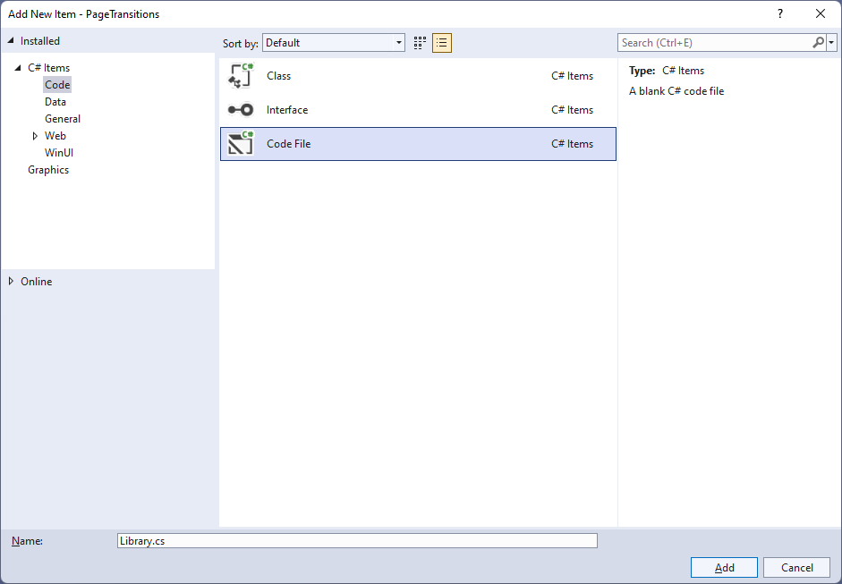
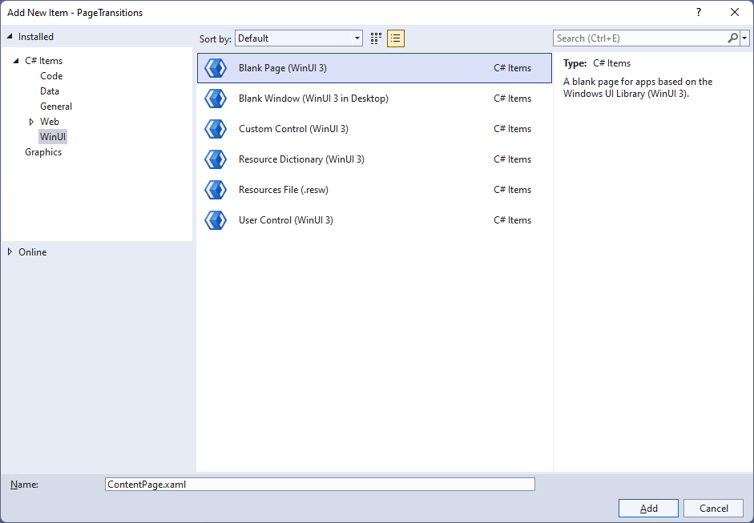
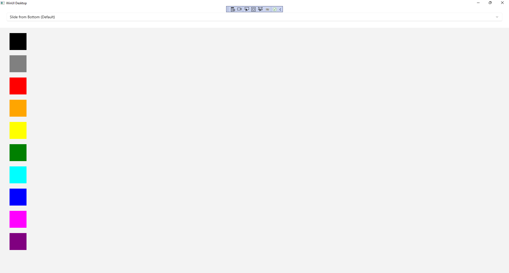
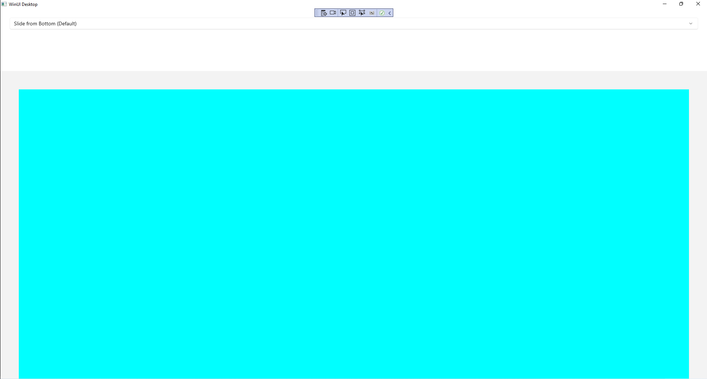

Page Transitions
Learn to use Page Transitions using Windows App SDK with this Tutorial
Page Transitions shows how you can create Transitions that apply to Pages within an application using the Windows App SDK.
Step 1
Follow Setup and Start on how to get Setup and Install what you need for Visual Studio 2022 and Windows App SDK.


Step 2
Then in Visual Studio within Solution Explorer for the Solution, right click on the Project shown below the Solution and then select Add then New Item…

Step 3
Then in Add New Item from the C# Items list, select Code and then select Code File from the list next to this, then type in the name of Library.cs and then Click on Add.

Step 4
You will now be in the View for the Code of Library.cs, within this type the following Code:
using Microsoft.UI.Xaml.Controls;
using Microsoft.UI.Xaml.Media;
using Microsoft.UI.Xaml.Media.Animation;
using Microsoft.UI.Xaml.Shapes;
using System;
internal class Library
{
public static Frame Frame { get; set; }
public static string Option { get; set; }
public static void Navigate(Type page, object parameter = null)
{
NavigationTransitionInfo transitionInfo = Option switch
{
"Entrance" => new EntranceNavigationTransitionInfo(),
"Drill In" => new DrillInNavigationTransitionInfo(),
"Slide from Right" => new SlideNavigationTransitionInfo()
{
Effect = SlideNavigationTransitionEffect.FromRight
},
"Slide from Left" => new SlideNavigationTransitionInfo()
{
Effect = SlideNavigationTransitionEffect.FromLeft
},
"Supress" => new SuppressNavigationTransitionInfo(),
_ => null,
};
if (Frame.BackStackDepth > 0)
{
Frame.BackStack.Clear();
}
Frame.Navigate(page, parameter, transitionInfo);
}
public static Brush GetFill(object parameter)
{
return (parameter as Rectangle).Fill;
}
}
The Class that has been defined in Library.cs has Properties for Frame and Option then a Method for
Navigate that will be used to set the NavigationTransitionInfo to set the different Page Transitions
when using Navigate with the Frame and the BackStack for the Frame is also cleared so the different
Page Transitions can be seen. There is also a Method to get the Fill from a Rectangle from an object
and everything is declared as static so an Instance of the Class is not needed.
Step 5
Then in Visual Studio within Solution Explorer for the Solution, right click on the Project shown below the Solution and then select Add then New Item…
Step 6
Then in Add New Item from the WinUI items list, select Page and then select Blank Page (WinUI 3) from the list next to this, then type in the name of ContentPage.xaml and then Click on Add.

Step 7
Step 8
Then in the XAML for ContentPage.xaml, below <Grid> and above </Grid>, type in the following XAML:
<ListView Name="Display" Margin="10">
<Rectangle HorizontalAlignment="Left" Margin="10"
Width="64" Height="64" Tag="Black" Fill="Black" Tapped="Rectangle_Tapped"/>
<Rectangle HorizontalAlignment="Left" Margin="10"
Width="64" Height="64" Tag="Gray" Fill="Gray" Tapped="Rectangle_Tapped"/>
<Rectangle HorizontalAlignment="Left" Margin="10"
Width="64" Height="64" Tag="Red" Fill="Red" Tapped="Rectangle_Tapped"/>
<Rectangle HorizontalAlignment="Left" Margin="10"
Width="64" Height="64" Tag="Orange" Fill="Orange" Tapped="Rectangle_Tapped"/>
<Rectangle HorizontalAlignment="Left" Margin="10"
Width="64" Height="64" Tag="Yellow" Fill="Yellow" Tapped="Rectangle_Tapped"/>
<Rectangle HorizontalAlignment="Left" Margin="10"
Width="64" Height="64" Tag="Green" Fill="Green" Tapped="Rectangle_Tapped"/>
<Rectangle HorizontalAlignment="Left" Margin="10"
Width="64" Height="64" Tag="Cyan" Fill="Cyan" Tapped="Rectangle_Tapped"/>
<Rectangle HorizontalAlignment="Left" Margin="10"
Width="64" Height="64" Tag="Blue" Fill="Blue" Tapped="Rectangle_Tapped"/>
<Rectangle HorizontalAlignment="Left" Margin="10"
Width="64" Height="64" Tag="Magenta" Fill="Magenta" Tapped="Rectangle_Tapped"/>
<Rectangle HorizontalAlignment="Left" Margin="10"
Width="64" Height="64" Tag="Purple" Fill="Purple" Tapped="Rectangle_Tapped"/>
</ListView>
This ListView contains Rectangle elements of different colours plus each has the Event for Tapped set to the
Method of Rectangle_Tapped which will be triggered when the Rectangle is Tapped or Clicked.
Step 9
Step 10
In the Code for ContentPage.xaml.cs type in the following Code below the end of the Constructor of public ContentPage() { ... }:
private void Rectangle_Tapped(object sender, TappedRoutedEventArgs e)
{
Library.Navigate(typeof(DetailPage), sender);
}
This will define the Method of Rectangle_Tapped which will call the Method of
Navigate in the Class of Library when a Rectangle is Tapped or Clicked.
Step 11
Then in Visual Studio within Solution Explorer for the Solution, right click on the Project shown below the Solution and then select Add then New Item…
Step 12
Then in Add New Item from the WinUI items list, select Page and then select Blank Page (WinUI 3) from the list next to this, then type in the name of DetailPage.xaml and then Click on Add.
Step 13
Step 14
Then in the XAML for DetailPage.xaml, below <Grid> and above </Grid>, type in the following XAML:
<Rectangle Margin="50" Name="Target"/>
<CommandBar VerticalAlignment="Bottom">
<AppBarButton Icon="Back" Label="Back" Click="Back_Click"/>
</CommandBar>
There is Rectangle element of Target along with an AppBarButton set to a Method of Back_Click which will be triggered when the AppBarButton is Clicked.
Step 15
Step 16
In the Code for DetailPage.xaml.cs type in the following Code below the end of the Constructor of public DetailPage() { ... }:
protected override void OnNavigatedTo(NavigationEventArgs e)
{
Target.Fill = Library.GetFill(e.Parameter);
}
private void Back_Click(object sender, RoutedEventArgs e)
{
Library.Frame.GoBack();
}
There is the Method for OnNavigatedTo that uses override to change the functionality of the Method for OnNavigatedTo which will set Fill
for the Rectangle element of Target using the Method of GetFill from the Class for Library and there is the Method for when the
AppBarButton is Clicked of Back_Click which calls the Method of GoBack for the Frame in the Class for Library.
Step 17
Step 18
In the XAML for MainWindow.xaml there will be some XAML for a StackPanel, this should be Removed:
<StackPanel Orientation="Horizontal"
HorizontalAlignment="Center" VerticalAlignment="Center">
<Button x:Name="myButton" Click="myButton_Click">Click Me</Button>
</StackPanel>
Step 19
While still in the XAML for MainWindow.xaml above </Window>, type in the following XAML:
<Grid>
<Grid.RowDefinitions>
<RowDefinition Height="Auto"/>
<RowDefinition Height="*"/>
</Grid.RowDefinitions>
<ComboBox Grid.Row="0" Name="Options" Margin="25"
HorizontalAlignment="Stretch"
SelectionChanged="Options_SelectionChanged">
<ComboBoxItem IsSelected="True">Slide from Bottom (Default)</ComboBoxItem>
<ComboBoxItem>Entrance</ComboBoxItem>
<ComboBoxItem>Drill In</ComboBoxItem>
<ComboBoxItem>Slide from Right</ComboBoxItem>
<ComboBoxItem>Slide from Left</ComboBoxItem>
<ComboBoxItem>Supress</ComboBoxItem>
</ComboBox>
<Frame Grid.Row="1" Name="Frame"/>
</Grid>
This XAML features a Grid with the top Row set to a ComboBox that has the Page Transitions to use and the Event
for SelectionChanged set to the Method for Options_SelectionChanged with the second Row set to a Frame.
Step 20
Step 21
In the Code for MainWindow.xaml.cs there be a Method of myButton_Click(...) this should be Removed by removing the following:
private void myButton_Click(object sender, RoutedEventArgs e)
{
myButton.Content = "Clicked";
}
Step 22
Once myButton_Click(...) has been removed, type the following Code below the end of the Constructor of public MainWindow() { ... }:
private void Options_SelectionChanged(object sender, SelectionChangedEventArgs e)
{
Library.Option = (Options.SelectedItem as ComboBoxItem).Content as string;
}
The Method of Options_SelectionChanged will be triggered when an option has been selected from the ComboBox and set the Property for Option within the class of Library.
Step 23
While still in the Code for MainWindow.xaml.cs within the Constructor of public MainWindow() { ... } and below the line of this.InitializeComponent(); type in the following Code:
Library.Frame = Frame;
Library.Navigate(typeof(ContentPage));
The Constructor of public MainWindow() { ... } should look like the following:
public MainWindow()
{
this.InitializeComponent();
Library.Frame = Frame;
Library.Navigate(typeof(ContentPage));
}
These set up the Property for the Frame and call the Method for Navigate in the class of Library.
Step 24
Step 25
Once running you should see the ComboBox with the Page Transitions options and Rectangle elements.

Step 26
You can Click on any of the Rectangle elements to switch from the Content Page to the Detail Page and observe the Page Transition based on the option selected from the ComboBox.

Step 27